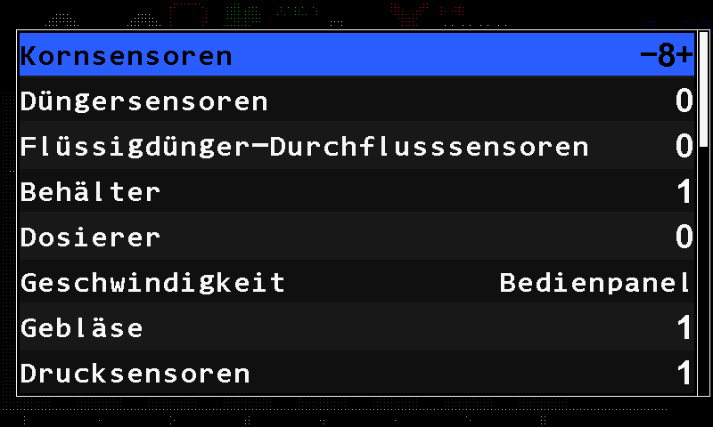
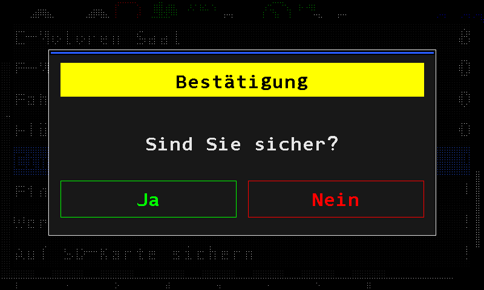

Das Profil
Was das Profil dem Panel mitteilt, wie Sie es prüfen, was die einzelnen Profilpunkte erlauben und wann das Panel ein Profil ablehnt.
Das Profil teilt dem Panel mit, welche Geräte und wie viele davon an der Maschine sind. Ein Panel wird meist mit bereits eingestelltem Profil geliefert. Prüfen Sie es, bevor Sie irgendetwas anderes einstellen: Ein Gerät, das im Profil fehlt, wird nie überwacht, und ein Gerät im Profil, das nicht verbaut ist, löst „Verbindung weg“ aus.
Profil auf dem Startbildschirm prüfen
Schalten Sie das Panel ein und warten Sie einige Sekunden. Sehen Sie dann auf den Startbildschirm:
- Kein Alarm „Verbindung weg“ – das Panel hat jedes Gerät gefunden, das das Profil angibt.
- Keine weißen Anzeigen mit Ausrufezeichen – kein Gerät ist aus der Überwachung genommen.
- Keine roten Anzeigen mit „X“ – jedes Gerät antwortet.
Was die Anzeigen bedeuten: Anzeigen des Startbildschirms. Wie Sie ein Gerät in die Überwachung nehmen oder daraus herausnehmen: Sensor in die Überwachung nehmen oder herausnehmen.
Profil öffnen
Das Profil liegt auf der Ebene „Service“: Heben Sie die Ebene an (Agronomen-Ebene aktivieren – wählen Sie „Service“), dann „MENU“ → „Service“ → „Profil“.

- „Kornsensoren“ – die Anzahl der Kornsensoren. Der markierte Punkt zeigt seinen Wert zwischen – und +: Ändern Sie ihn mit „MINUS“ / „PLUS“.
- „Düngersensoren“ – Sensoren für Trockendünger.
- „Flüssigdünger-Durchflusssensoren“ – Sensoren der Flüssigdüngersektionen.
- „Behälter“ – Füllstandssensoren der Behälter.
- „Dosierer“ – Sensoren der Dosierwellen.
- „Geschwindigkeit“ – woher die Fahrgeschwindigkeit kommt.
- „Gebläse“ – Drehzahlsensoren der Gebläse.
- „Drucksensoren“ – Luftdrucksensoren.
- Bildlaufleiste. Weitere Punkte folgen weiter unten – siehe Tabelle.
Die Profilpunkte
| Punkt | Bereich |
|---|---|
| „Kornsensoren“ | 2 … 120. Das Menü lässt die Eingabe 1 zu, ein solches Profil wird beim Speichern jedoch abgelehnt. |
| „Düngersensoren“ | 0 … 60; Korn- und Düngersensoren zusammen höchstens 120. |
| „Flüssigdünger-Durchflusssensoren“ | 0 … 60 |
| „Behälter“ | 0 … 9 |
| „Dosierer“ | 0 … 9 |
| „Geschwindigkeit“ | „Nein“ / „Bedienpanel“ (Sensor am Panel angeschlossen) / „Eingangsmodul“ (ein Radsensor am Eingangsmodul) / „Eingangsmodul(2)“ (zwei Radsensoren am Eingangsmodul). |
| „Gebläse“ | 0 … 2 |
| „Drucksensoren“ | 0 … 3 |
| „Arbeitsstellungssensor“ | „Nein“ / „Ja“ |
| „Spuranzeiger“ | „Nein“ / „Einer“ / „Beide“ |
| „Batterie lädt nicht“, „Öldruck-Störung“, „Zündung“, „Wenig Kraftstoff“, „Luftfilter“ | Die Motorsensoren – je „Nein“ / „Ja“. |
| „E-Motoren Saat“ | 0 … 60 |
| „E-Motoren Dünger“ | 0 … 30; beide Motorgruppen zusammen höchstens 60. |
| „Fahrgassen-Aktuatoren“ | 0 … 4 |
| „Flüssigdünger-Pumpencontroller“ | 0 … 1 |
Bei einem Panel für ein System ohne Elektromotoren fehlen die beiden Motorpunkte im Menü.
Wann das Panel ein Profil ablehnt
Das Panel prüft das ganze Profil, nicht nur den Punkt, den Sie geändert haben. Es lehnt ein Profil ab, wenn:
- Behälter-, Dosierer- und Motorsensoren zusammen mehr als 12 ergeben;
- sie zusammen mehr als 10 ergeben, während Druck- und Gebläsesensoren zusammen mehr als vier ergeben;
- Druck- und Gebläsesensoren zusammen mehr als fünf ergeben;
- es Düngermotoren, aber keine Saatmotoren gibt oder Düngermotoren, aber keine Düngersensoren;
- es Elektromotoren oder eine Flüssigdüngerpumpe ohne Geschwindigkeitssensor gibt;
- Flüssigdünger-Ventile und ein Pumpencontroller gleichzeitig angegeben sind.
Profil speichern
Wählen Sie nach der Änderung des Profils am Ende des Menüs „Profil“ den Punkt „Profil speichern“ und drücken Sie „MENU“. Das Panel fragt „Sind Sie sicher?“.

Das Bestätigungsfenster. Berühren Sie „Ja“. Das Panel zeigt „Bitte warten...“, dann „Gespeichert“ und „Neu starten“, und startet selbständig neu.
Wurde nichts geändert, zeigt das Panel nur „Keine Änderungen“. Verstößt das Profil gegen eine der obigen Regeln, zeigt es „Ungültiges Profil!“ in Rot und speichert nichts.
Alle Einstellungen eines Profils speichern und auf einer Speicherkarte mitnehmen: Einstellungen speichern und laden.
Ihre Maschine tut etwas, das diese Seite nicht beantwortet? Schreiben Sie an support@agriwelt.com — es antwortet ein Ingenieur.